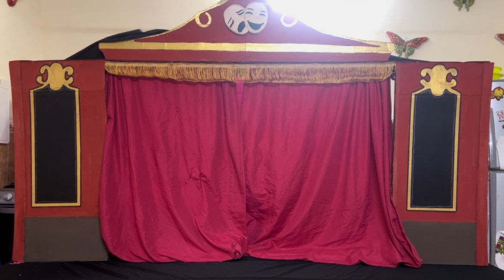

Introduccion
¿Qué pasaría si en Nunca Jamás se convirtira en unos personajes que no aparentan lo que son?, ¿Y si esos enanitos que andan por ahí no fueran enanitos de verdad pero ahora ellos nos cuemtan la historia?. Con un enfoque cómico, la obra inspirada en "Enanitos falsos" da un giro irreverente a la historia tradicional ya que no es como la veias de niño.
Descripción general del proyecto
Este proyecto teatral propone una adaptación creativa del clásico Peter Pan, fusionando su historia con una temática humorística original: LOS ENANITOS FALSOS. La obra presenta una versión libre y paródica del cuento, donde los personajes tradicionales no son tan tradicionales, ya que los enanitos tomaron el teatro. Estos "enanitos falsos" se infiltran en el mundo de Nunca Jamás donde el CUBISMO se ve en todos lados y lasREDES SOCIALES toman un control importante , generando situaciones y momentos cómicos que invitan a la audiencia a ver la obra. La propuesta combina fantasía, comedia y elementos del teatro físico para crear una experiencia divertida, original y crítica, dirigida a un público juvenil y general.
Público objetivo: Niños, familias y amantes del teatro visual.
